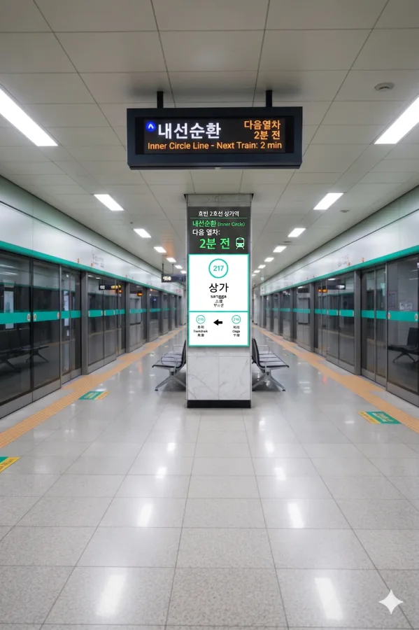

효빈 도시철도 2호선 217번 역이다. 효빈광역시 안천구 상가동 526에 위치해 있다. 덕빈권 최대의 젖줄인 팔천강 본류를 덮은 거대한 복개도로 바로 아래, 단단한 암반층을 뚫고 지어진 심도 깊은 지하철역이다. 우리가 흔히 아는 그 '상가건물(Shopping Mall)' 할 때 상가가 맞다...는 농담이고 윗마을이라는 뜻이다.
1980년대 안천구 시가지의 폭발적인 팽창과 팔천강 전면 복개 공사가 맞물리던 시기, 무시무시한 유속으로 소용돌이치는 팔천강 본류 지하수계 아래로 터널을 뚫어야 했던 극한의 난공사 끝에 1989년 개통되었다. 역명인 상가(上街)는 '윗마을 거리'라는 안천구 토박이 지명에서 유래했다.
이 역의 가장 큰 특징은 압도적인 깊이다. 서류상의 역사 구조는 지하 3층으로 표기되어 있으나, 지표면 바로 아래를 거대하게 관통하는 팔천강 복개 콘크리트 수로(지하 1~2층 깊이)를 완벽하게 피하기 위해 실제로는 일반적인 지하 5~6층 수준의 까마득한 암반층까지 파고들어갔다. 덕분에 지상 출구에서 개찰구로 내려가는 에스컬레이터의 길이가 아찔할 정도로 길고 가파르며, 출퇴근 시간에 이 에스컬레이터가 고장이라도 나는 날엔 상가동 일대 출근러들의 곡소리가 끊이지 않는다.
또한, 역 천장 위로는 지금도 효빈시 최대의 수량을 자랑하는 팔천강의 흑수(黑水)가 맹렬하게 흐르고 있어, 막차가 끊긴 심야의 조용한 시간대에는 역사 내부에서도 미세하게 강물이 굽이치는 진동과 우레 같은 물소리가 벽을 타고 전해진다는 직원들의 소름 돋는 증언이 존재한다.
상가동(뇌전동)의 핵심 상업 지구로, 효빈시 최대 규모의 도매 상권인 상가도매물류시장이 남쪽에 바로 붙어 있어 새벽 시간대부터 경매 상인들과 화물 트럭들로 북새통을 이룬다.
특히 1번과 2번 출구로 나와서 '남쪽'으로 도보로 5분 정도 걸어 내려가면, 효빈시 역사상 가장 어둡고 처절한 사연이 집중된 랜드마크인 안천대교의 북단과 곧바로 연결된다.
팔천강 본류가 지상으로 노출되어 맹렬하게 소용돌이치는 일명 '콘크리트 협곡'이라 불리는 이 다리는, 2007년 붉은 겨울 참사(5호선 노동자 4인 투신)를 비롯해 고노애의 시련, 이주미의 딥페이크 협박 투신 시도, 그리고 임승민의 처절한 상장폐지 절규 등 수많은 굵직한 사건사고와 벼랑 끝에 몰린 이들의 투신 소동이 얽혀 있는 요주의 장소다. 지속적인 비극에 분노한 시민 사회의 요구에 따라, 현재는 박효빈 시정에 의해 대대적인 롤러 펜스와 AI 관제 시스템을 갖춘 '생명의 다리'로 전면 개조 공사가 한창 진행 중이다.
|
2
상가역 출구 정보
|
||
|---|---|---|
| 번호 | 주요 시설 및 방향 | 비고 |
| 1 | 상가초등학교, 뇌전동 행정복지센터, 안천대교 북단 (남쪽으로 도보 이동) | 도보 5분 거리 |
| 2 | 상가도매물류시장, 안천대교 북단 (남쪽으로 도보 이동) | 유동인구 매우 많음 |
연도별 일평균 승하차 인원 통계다. 거대한 상가도매물류시장의 고정 수요와 안천구 시내버스 환승 허브로서의 역할 덕분에 이용객이 꾸준히 증가하여 현재 일평균 6천 명 선을 목전에 두고 있다.
| 상가역 이용객 통계 | ||
|---|---|---|
| 연도 | 일평균 이용객 | 비고 |
| 2020년 | 4,551명 | 코로나19 여파 |
| 2021년 | 4,790명 | |
| 2022년 | 5,354명 | |
| 2023년 | 5,635명 | |
| 2024년 | 5,932명 | 역대 최고치 갱신 |
상가도매물류시장의 막대한 물류 수요 처리와 2호선 급행열차의 원활한 통과 및 대피, 그리고 일부 열차의 종착/회차 기능을 고려하여 일개 일반역임에도 불구하고 2면 3선의 웅장하고 넓은 섬식 승강장으로 지어졌다.
현재 2호선 급행열차가 운행 중이며, 급행열차는 가운데 선로(중선)를 통해 맹렬한 속도로 일반열차를 추월하며 무정차 통과한다. 상가역 자체는 급행 미정차역이므로 승강장 내 노선도나 안내판에 급행 정차 표시는 따로 존재하지 않는다.

| 흑택 ↑ | ||||
| ㅣ | 하 | ㅣ | 상 | ㅣ |
| ↓ 하가 | ||||
| 상 | 2 효빈 도시철도 2호선 | 외선순환 시로 · 우전 · 신흥 방면 |
| 하 | 2 효빈 도시철도 2호선 | 내선순환 중수 · 시청 · 효빈대학교 방면 |
역 주변이 혼잡한 상업지구인 만큼, 안천대교를 건너 남북을 잇는 시내버스 노선들이 상가역 정류장을 핵심 환승 거점으로 삼고 있다.
| 구분 | 정류소명 | 노선 번호 |
|---|---|---|
| 순방향 | 상가역 | 36, 262, 361, 441, 7777 |
| 역방향 | 상가역(건너편) | 63, 622, 361, 441-1, 7777R |